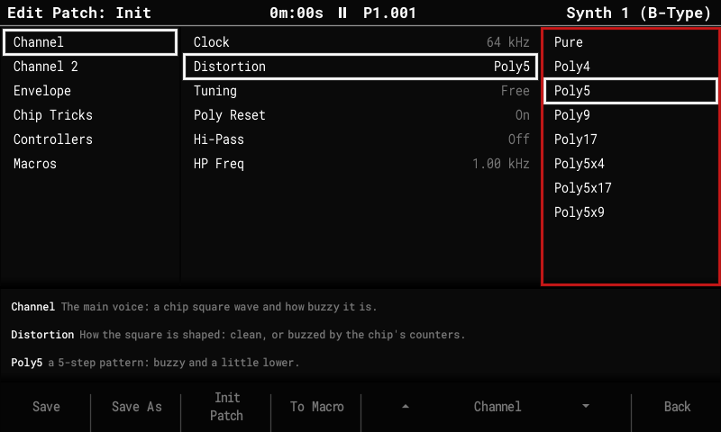
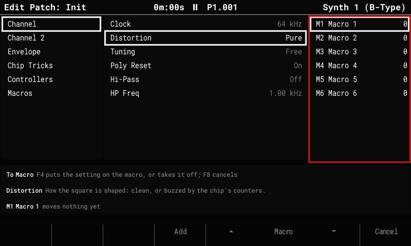
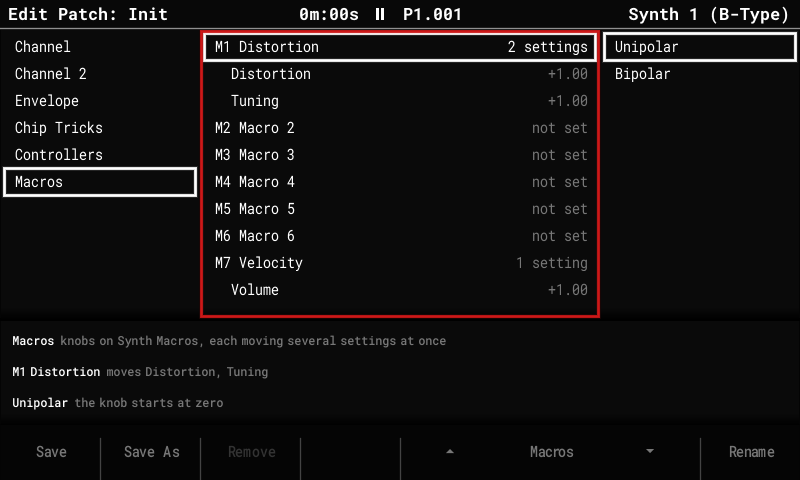

Edit Patch and synth help¶
Edit Patch (Instrument Params on a synth slot, then F8) shows every setting of the slot's synth. In this fork it's laid out like Config, and a help box explains whatever you're on.

The layout¶
Three columns, left to right:
| Column | Shows |
|---|---|
| Sections | the synth's groups of settings (Channel, Envelope …), then Macros |
| Settings | the settings of the selected section, with their values |
| Value | the selected setting's value: a list of choices, or a bar for a number |
- Left / Right move the red frame from column to column.
- Up / Down and the knob move inside the framed column: in the value column they change the setting. In a list, Down goes down the list; on a bar, Up raises the value.
- F5 / F7 move to the previous / next setting and F6 to the next section, wherever the frame is.
- Delete puts the selected setting back to its Init value.
- F1 Save, F2 Save As, F3 Init Patch and F8 Back work as before.
- F4 To Macro puts the selected setting on a macro (below).
- All 48 pads play the synth while you edit (stock picks the section with the pads).
Macros¶
A macro is one knob that moves several settings at once: M1–M6 are the knobs on the Synth Macros page (Instrument Params again) and the pattern's FX columns A–F, M7 follows the Volume column. With a macro at +1.00 on a setting, turning the knob all the way up moves that setting across its whole range; −1.00 moves it the other way.
Put a setting on a macro: select the setting, press F4 To Macro. The value column lists M1–M6 with how many settings each one moves, and on where this setting already is. Pick one with Up / Down or the knob and press F4 again: Add puts the setting on it at +1.00, Remove takes it off. F8 cancels. A macro without a name of its own takes the setting's name. A macro moves at most five settings.

The Macros section, the last in the list, shows every macro with the settings it moves:
- On a macro's row: Unipolar (the knob goes from 0 up) or Bipolar (the middle is 0) in the value column; F8 Rename names it.
- On one of its settings: the amount in the value column, −2.00 to +2.00; F3 Remove takes the setting off the macro; Delete puts the amount back to the Init patch's.

The Synth Macros page lists under each bar the settings its macro moves, with + or − for the direction, or "not set".
An Init patch starts with no macros set; DX7 voices come with M1–M6 on the six Tone controls (see DX7).
The help box¶
Under the columns, three lines:
- the section: what the group is for;
- the setting: what it does;
- the choice you're on, or for a number, what low and high values do.
For example, on B-Type's Channel > Distortion with Poly5: "Channel: the main voice, a chip square wave and how buzzy it is", "Distortion: how the square is shaped", "Poly5: a 5-step pattern".
The texts come from the SD card, Help/Synths/<SYNTH>.md (in Modules.zip on the release
page, next to the card modules; see Install the modules).
Without the file the box says which one is missing, and everything else works as usual.
Every synth has a help file. The same text, with a guide to how each synth works, is on its page under Synths.
Writing a help file¶
Each synth's help is a Markdown file next to its code in the module repository,
modules/<synth>/help/<SYNTH>.md. It has two parts:
- a guide for these docs (how the synth works, tips), free Markdown;
# Settings, the short reference the help box shows:##a section,###a setting,- Choice: textfor each choice, named exactly as on screen, with one short paragraph under each heading.
Only the reference goes on the card; the whole file becomes the synth's page on this
site. make host-test checks it against the synth: every section, setting and choice
needs a line, and each line has to fit the box. The format is in
src/core/modules/synth_help.h.